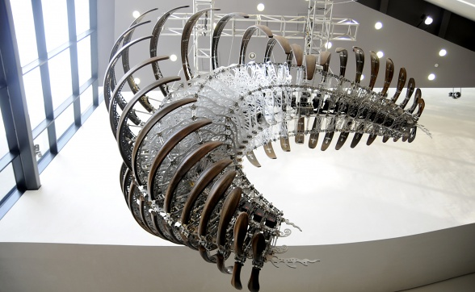
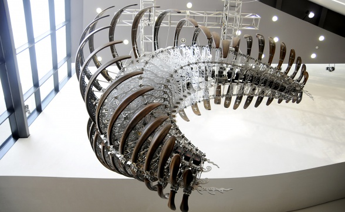

Neri Oxman: arquitectura, biología y más
Neri Oxman es una arquitecta israelí-estadounidense, diseñadora, y profesora en el MIT Media Lab, donde dirige el grupo de investigación Mediated Matter. Es conocida por el arte y la arquitectura que combinan diseño, biología, computación e ingeniería de materiales.
Su trabajo incorpora diseño ambiental y morfogénesis digital, con formas y propiedades que son determinadas por sus contextos. Acuñó la frase "ecología material" para definir su trabajo, colocando a los materiales en contexto. Sus marcas de estilo incluyen superficies de colores brillantes y texturizadas con estructura en muchas escalas, y materiales compuestos cuya dureza, color y forma varían sobre un objeto. Los resultados son a menudos diseñados para ser llevados o tocados, e inspirados por la naturaleza y la biología.
Muchos del proyectos de Oxman usan impresión 3D y técnicas de fabricación. Incluyen el Silk Pavilion, hilado por gusanos de seda en un marco de nylon, Ocean Pavilion, una plataforma de fabricación a base de agua que construyó estructuras de quitosano, 63DP, la primera impresora 3D para vidrio ópticamente transparente y un conjunto de vidrio producido por ella, y colecciones de ropa impresa en 3D y utilizables en espectáculos de alta costura.
Ha realizado exhibiciones en el Museo de Arte Moderno y en el Museo de Ciencia de Boston, el cual tiene algunas de sus obras en su colección permanente. La conservadora del MoMA, Paola Antonelli, la llamó "una persona adelantada a su tiempo, no de su tiempo", y Bruce Sterling dijo de su obra que era "desgarradoramente diferente de cualquier cosa antes".


 
